海岛行记
环岛骑行所感
最近的骑行很是辛苦，而我，最近失眠却越来越严重。最多的时候也睡不到五个小时，今天更是才睡了一个小时就无论如何也睡不着了。
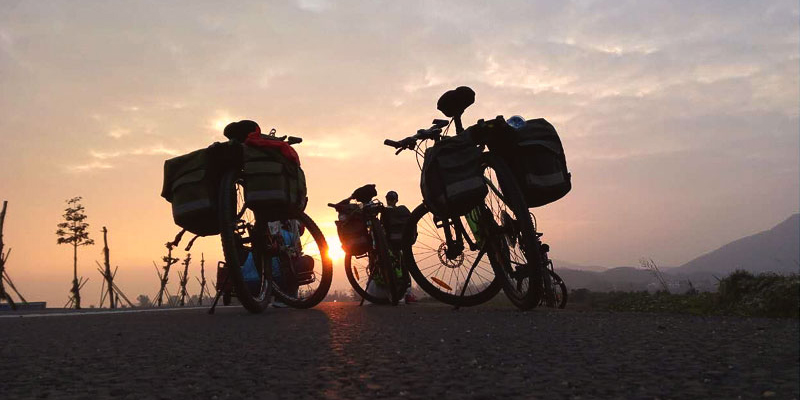骑行队里的阿杰和莫名又感动到我了，半夜起来上厕所看到我没有睡觉在群里发消息，竟然发来视频陪我聊天，不仅继续祝福，还各种都笑和支招，帮助我休息，真是感动的不要不要的。具体想来，感动的事真是时时刻刻在发生。
就在视频之前，所住酒店的老板也感动到我了！
充电宝里的电被十七用完了，充电线也被他拿了去，夜里十一点半手机没电自动关机，无事可做，我便睡下了。后来不知道几点醒来，无论如何无法再次入睡，强制开机，1:05，只显示一秒又自动关机了。
闲着无聊，本想出去吹吹风，没想到下楼看到老板正精神抖擞的看电视。老板得知我失眠，觉得不可思议，每天上百公里的骑行，应该更困更能睡才对啊，怎么会睡不着！老板很热心的给我找了他妻子喝的脑心舒口服液，说是治失眠很有效。虽然因为找不到吸管无法打开而最终没拿，但老板的热心和关心我是真的感受到了。
跟老板借充电器给手机充电，老板也是不厌其烦地换了一条有一条，直到换到合适的。
突然想起，晚上我们一行人一起吃饭为我庆祝生日，老板送上一盘我们没有点的菜。老板满脸笑容，话却简单：“这个菜是送的，祝生日快乐的”，说完赶紧退的远远的，很怕打扰我们的样子。我们一定就嗨了，一起热烈鼓掌，向老板道谢。老板的话简单朴实，但我们都感受到了浓浓的友好和祝福，给我们带来了感动和快乐！
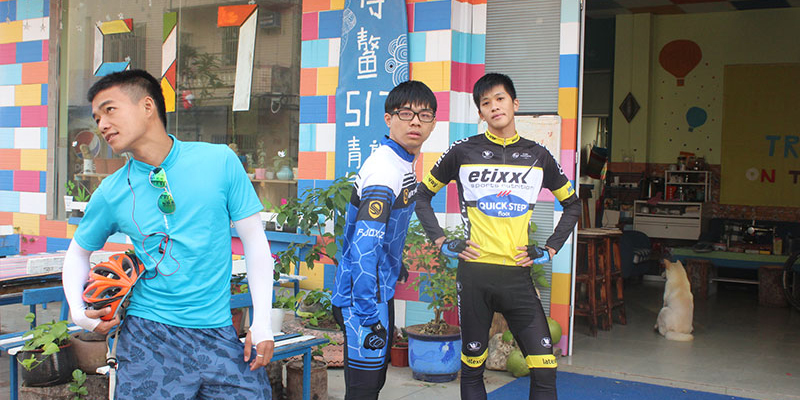莫名，这个家伙看起来有点邋遢，但真是个随和又活泼，细心又耐心的暖男呢！他和他的两个小伙伴因晚我们半天出发而狂追我们到天黑。
第一天因为我们到达出发点的时间不同而分两批出发，晚上九点半才在文昌517驿站相遇。通过猜测和简单询问，我们认出了彼此，确认对方的身份第一时间，他高兴的地打了个响指而且原地旋转一周，笑得跟朵乱颤的花一样。我站在楼梯的两三节台阶上，虽然不高，但还是把他的一切行为看在眼里，当时就觉得这个男生好夸张哦，不过好可爱！
骑行的第二天，我们一起出发。虽然他总是跟他的两个小伙伴一起紧跟在老大后面，但是第一站停下来喝椰汁的时候，我能感觉到他对我的关照。他眉飞色舞地跟跟大家聊天的时候，总不忘带下角落里默默不说话的我，让我不至于只是旁观别人的交谈。介绍我第一次见到的槟榔也是把口感、味道和可能出现的情况都说的很详细。真是一个热情洋溢又细心体贴的大男生！
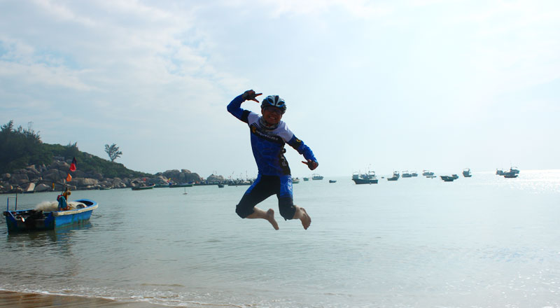昨天是骑行的第三天，莫名来压阵，也就是专门陪我骑行喽！因为我骑得最慢，为了不让我掉队，总有人专门陪着我。他一路上紧跟在我后面，叽叽喳喳说个不停，什么都聊。我这么说可不是嫌他吵，二是觉得这个词更能体现他的活跃。平坦的路上，我们各自扯着生活的琐事；上坡的时候，他给我加油；下坡的时候他提醒我控制车速。虽然这个家伙跟我一样傻傻的容易自以为是而把我带错了路，单这并没有给我们带来一丝不悦。相反更有斗志去加速，以便追上大部队。
今天虽然不是他来给我压阵，但只要我后面没人了，他就主动过来陪我。就算不在我后面，也在离我不远的地方。早上在兴隆车多人多的街上我们又跟丢了大部队，他想走又怕走错路，不走又怕路没错而落更远，呆萌的不得了。确定了路线没错，他一边努力赶路一边鼓励我，直到我们追上大部队。
关于我的生日，莫名也是蛮搞笑的。今天是我的生日，而昨天夜里凌晨零点，他第一个给我发消息，不是给我生日祝福，而是肚子饿了想我的饼干豆干。猜你就是故意的，故意先逗逗我，然后话题一转制造小惊喜，小把戏姐姐已经看明白啦。故事都讲个起承转合，你说你逗也逗完了，怎么真的没话了呢？没有任何表示，不是白白熬到凌晨零点争取到的第一时间消息了吗！天亮以后，这个家伙竟然说他是故意的！呵，你逗我是故意的，逗完没送祝福是真的忘了半夜发消息是为什么了吧！你这么呆萌，忘了我也一点不觉得奇怪~
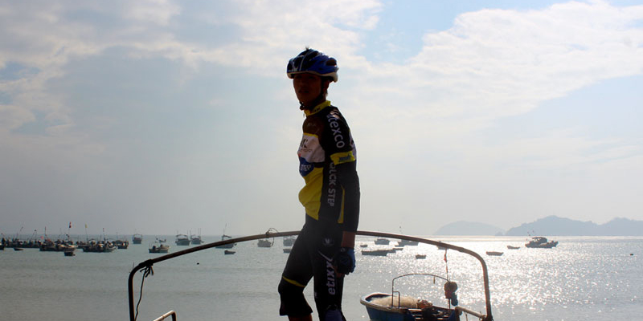阿杰，瘦瘦高高的，冲刺的时候能跟上老大，闲骑的时候也能跟在我后面不嫌我慢。不管聊什么，他都有话有的聊，拍照的时候poss从来不重样。最关键的是，他戏真的很足，不管给他设定成什么角色调戏，他都一秒明了并就位，真是堪称影帝。今天视频聊天，也主要是他一直跟我聊，说不完的段子，做不完的搞笑动作！
中午在陵水爬完坡拍照留念，阿杰又充分展示了他的表演才能。合照的时候我爬上了路边的高台，拍完照下来有点高，我没敢直接跳，看到阿杰在旁边，个子又那么高，就顺手拿他当扶手，跳了下来。就着手刚好在他的肩上，就顺手把他往后扳，想让他失去重心好吓吓他。就算他真的失去重心了，我也刚好在后面可以托住他。没想到这个家伙完全没被吓到，还顺势躺在我的胳膊上假装受伤！腰还这么软，我的双手一再放低他还能继续下腰，最后我屈膝把双手放到很低，让他腰下到最低限度也挨不着我的手臂，本想着你改终止表演了吧！结果人家偏不，悬空 “躺在我怀里”，好像伤的很严重。看着这逼真的表演，别人的惊叫，真是把我惊的一脸懵逼了！阿杰，还是叫影帝好了，戏这么足，不当演员真是可惜了。
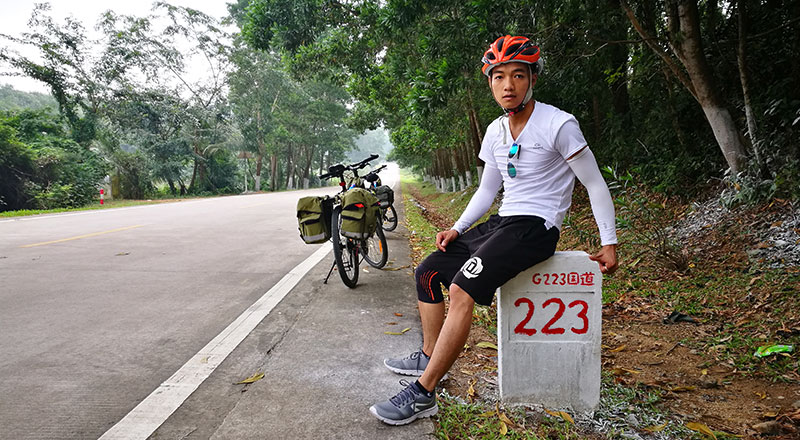阿珍那（其实应该叫他阿振），我也是昨天才知道该怎么称呼他。听他们说，是因为少林足球的桥段才这么称呼他。他皮肤是健康的黝黑，大眼睛、长睫毛、双眼皮，真是让女生羡慕整都整不出来的硬件设施吧！相比他的两个小伙伴，他的嘴巴没那么能说，不过也同样阳光活泼，脸上不乏笑容，应该是那种踏实类型的男生。因为他总是跟着老大跑，跟我没多少接触，所以暂时还没有什么趣事被我发现。
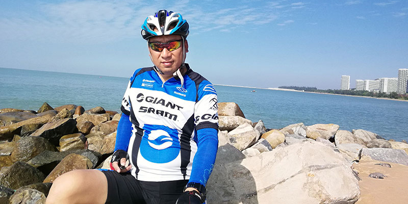老大，也就是我们的队长，一个多年的骑行爱好者，是我们骑行小队的实力担当和精神支付，是我们的灵魂人物！出发当天早上才初遇老大，简单几句后就帮我收拾行李，然后匆匆出发。陌生的人，简单的交谈，就这样互不了解的人就成了同行人。
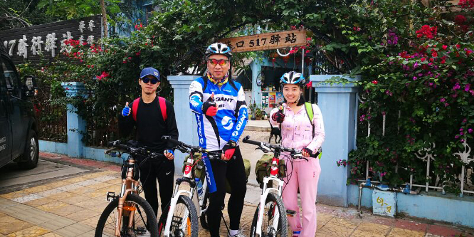第一天的骑行只有老大、十七、我三个人。他们都是老骑友，只有我是菜鸟，自然一个带队一个压后，而我成了被保护对象。一路上，我为了不拖后腿而盯着老大的背影狂踩狂追。虽然我很努力骑快，但还是总落后老大一大截，只能远远看着他骑行服的颜色。有时候会一不小心丢失他那一抹蓝，但是在迷茫困惑中继续前行，不久就会发现他竟停在路边等候。每到这个时候，我就欣喜地猛踩想追上。结果他总是在看到我后就长腿一甩，跨上单车，绝尘而去……啊偶，我还是不要痴心妄想能追上，使劲蹬车不要掉队太远就好了~~~
虽然十七一直跟在我后面，但是他与我，跟我与老大一样，保持着距离而默不作声。一路无话，我以为骑行就是这样，陌生同行，默默前进。
随着慢慢熟悉，才发现老大是个充满童心，活泼有趣的人，嗯，还很体贴！
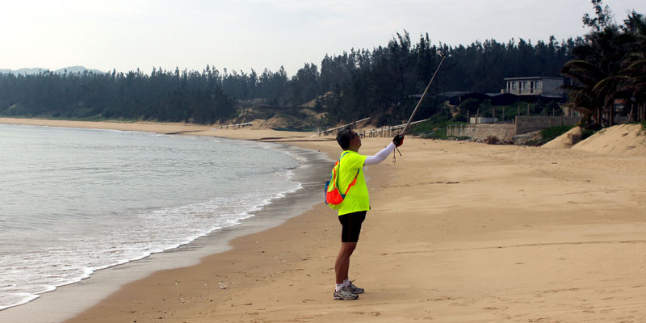第一天的下午，我就感觉到了老大的善解人意。他总是在骑了一个小时左右停下来休息。第一天的路况很好，我猜老大和十七连续骑行两个小时都没有问题，但是为了照顾我这只菜鸟，有是女生，总是考虑着我的节奏停下来休息。有时候我发小老大停下来，以为是又要暂时休息，结果他挥手让我超过去。我正疑惑，发现他蹲在地上拿出手机对着我，原来老大是为了给我们拍骑车飞驰而过的帅照，以便我们留念或者装逼发朋友圈用！
行至东郊椰林，面对翠绿笼罩，老大兴奋的大喊起来。他的声音浑厚有力，打破了碧莎障的寂寥，也打破了我心里的沉静。一路上我都追不上老大，又挡着十七让他不能放开骑，好怕他们心里会嫌弃我，好惭愧（捂脸）。老大的喊声在椰林回响下响亮而轻快，让我也一下子轻松下来。
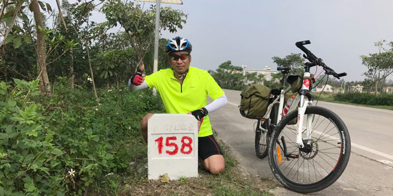老大特别有趣，说话的时候像小孩子一样手舞足蹈，跟我们一群90后一起玩也特别放的开，今天生日趴的搞笑气氛主要也是老大带起来的。虽然我们是一队，但毕竟老大的年龄比我们大，敬大于亲，我们还是不敢太放肆滴~没想到老大自己先嗨起来了。搞笑的表情、夸张的用词、扭捏的而动作，逗笑功力无人可档，他一嗨，我们就更嗨了。闹到最后，一队人就像一群玩疯的孩子，笑声不断、姿态百出、群魔乱舞！
我一直为自己太慢拖慢了整队的速度而很惭愧，从没有怨老大的想法。没想到老大也会担心我们会认为他只管快骑，对我们不管不顾，喝好聊开后，跟我们好一通解释。原来他确实有快骑，但却是为了带快我们的速度，以免天黑前到不了预订地点而需要夜骑，毕竟夜骑不方便又很危险。他也不是一味快骑，二是一遍尽可能的带快我们的速度，一边考虑我们每个人的体能适时休息，同事还要寻找有特色的地方让我们拍照留念。有时候接到一个拍照地点我骑半个小时才到。每次都是大家都在等我，真是不好意思。而老大总说他刚到不久，或者才刚等了十来分钟。我猜老大肯定等了我半个小时或者更久，他是为了不让我觉得有压力才这么说。老大，原来你操了那么多心，扛了那么多压力，为我们做了那么多事。老大，你真是一个温柔体贴、细心周到、友爱宽厚的好老大！
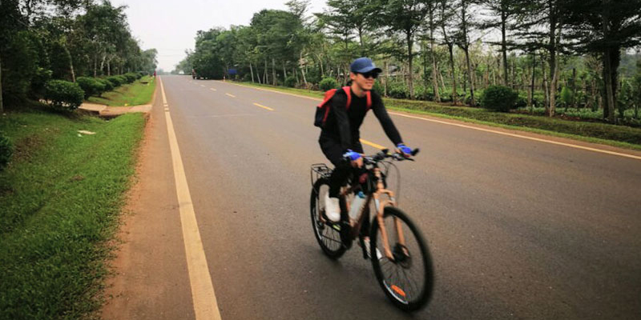第一次见十七，是3号早上九点多在海口517。我为了方便找到组织，拿了一些吃的坐在窗边吃，一抬头就看到一个黑影向我靠近。仔细一看，一身黑衣，带着长帽沿的棒球帽，还带着黑色墨镜，完全看不出这人长什么样子，像从电视里走出来的冷酷保镖或神秘特务一样！“好酷哦”，我当着他的面惊呼出来，而他平淡不惊，酷酷的没有任何反应。十七话少的，确认身份、指路、指点骑车技巧，甚至是鼓励都只是说几个必不可少的字（不过声音和柔和友善）。骑行中，大部分时间都是十七跟在我后面，他有时候吹口哨，有时候唱歌，反正几乎不怎么跟我说话，不像莫名一样叽叽喳喳什么都聊，又加上他总算是一身暗黑不见容颜，真是一个大写的酷。
随着接触增多，十七的话也多了点，但是这个家伙对自己的介绍总是用一些很高调的词，一点都不接地气。什么为国家做贡献啊，为社会尽责任啊，明显就是夸大吹嘘嘛，就算真的是这么做的，哪有人这么说自己啊，真是太能装逼了，我一点都不喜欢！
等大家真正熟悉起来，才发现十七实际上是一个非常好的人。可能正因为他不是真的爱装逼，所以装起来才那么别扭，让人不舒服。除去伪装外表的十七细心周到、宽容体贴，是我遇到最讨人喜欢的男生（迷妹）。
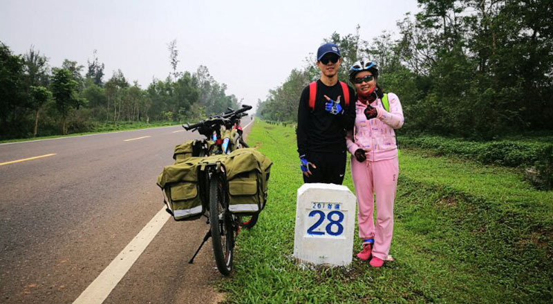出发之前大家在微信群里讨论让我做生活委员，因为不知道生活委员具体是做什么的我就没同意也没反对。后来听说生活委员可不好当，点餐、算账、订床铺，各种生活琐事都要做，还要体力好，跑在前面才能把问题解决好。而我，光体力就不行了，不拖后腿就不错了哪有精力给大家解决生活问题。还好有十七，他主动把这些事都承包了，还做的很好。每天的吃住行问题，不管多琐碎复杂，他都处理的很好，账记得有条有理清清楚楚。住的地方总是提前一天就订好，不仅价格实惠，环境也都棒棒哒。就连走过很多路住过很多店的老大都对十七赞不绝口，总说十七要是再他们那里当个办公室主任绝对深受所有人喜爱。老大，十七不用当办公室主任啊，现在不是已经被大家喜欢的不要不要的了吗！
一路骑行，大部分时间都是十七跟在我后面，作为一个朝气蓬勃的大男生，又是多年的骑行爱好者，总被一个第一次骑行又慢吞吞的女生挡着路心里应该很不爽吧！我非常愧疚……可他表现出来的却是我从没见过的宽容和耐心。我害怕过马路时候的车流，有时候抬脚要走又因为害怕退回来。第一次见面我就很没出息的退了回来，在陌生人面前真是有抱歉又惭愧。而他却声音柔和的跟我说：“没事，正常”，然后耐心地等到我过了马路他才跟着过来。他简单的一句话，让我心里一下子踏实了许多。骑行中每天都有很长时间被我挡在前面，但是不管我骑快骑慢，不管我落后多远，十七都从来不催促我。感觉他就像海岛上温和的海风，默默无声却包容着我的胆怯、弱小和麻烦。
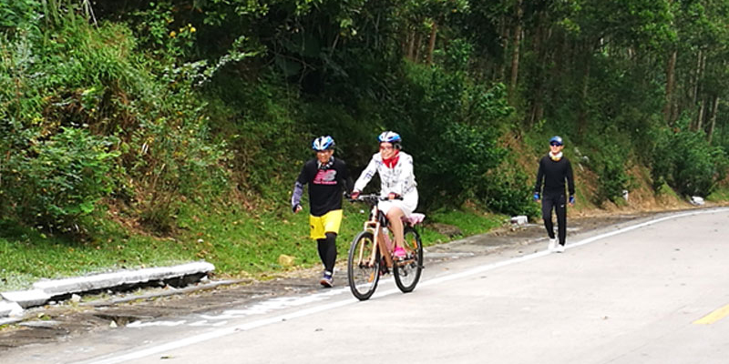十七总是细致入微的帮助我，骑行中会帮我指路，乘渡船会帮我拿车，路不好会帮我驮行李，最让人感动的是陵水那一段。下坡很困难，山路又陡又曲折，一不小心就有摔车的危险，路上我们就遇到有人在这里摔的面目全非。所有的人都对我很好，都叮嘱我要点刹要控制车速，但是只有十七是慢慢跟在我后面。有一段路，虽然我用点刹控制车速，但是由于坡度比较大，车子还是行驶的很快。一声响，不知道什么东西掉了，我正疑惑，十七追上来告诉我是我的骑行眼镜掉了，而且摔坏了，一部分掉进了路边的下水道。我又惹麻烦了……还有很远的路要走，不能没有眼镜。为了以后的骑行不太阳晃花眼，还是得回去找找。
十七很尊重我的想法，不但不反对我回去找已经摔坏的眼镜，还让我扶车，他回去找。我一路上给别人带来太多麻烦，心里十分过意不去，这次坚决自己去解决自己造成的麻烦。我按着十七的指点找到了镜片和支架，也找到了镜框掉下去的位置。但是下水道很深，我没有办法把镜架拿出来。又是十七，他又跑过来帮我。蹲在地上尝试了几次都没有够到，最后他整个人趴在地上，胳膊从石板的缝隙中伸下去，打算用手把眼镜架拿出来。因为眼镜架落在石板的中间位置，十七把手伸到最长也没能够到。最后我找来树枝，把眼镜架拨到十七手边，我们合力才把眼镜架捞了上来。因为我当时的注意力全部都在解决问题上，所以没太注意十七的动作，辛亏老大把这一切拍了下来。照片中，十七全身触地，认真地帮我捞眼镜，完全不顾地上的泥土和他那身酷酷又容易脏的衣服。他这个时刻注意形象又特爱装逼的家伙，为了帮我真是是完全不顾形象。看着这样的场景，真是不想感动都不行了！
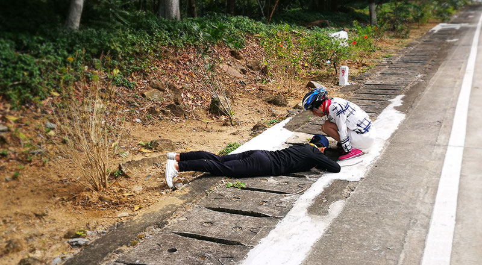今天是我的生日，每个人都有祝福，十七更是格外有心。又大吃一顿已经出乎我的意料了（昨晚已经吃了饭喝了酒，凌晨时每个人都送了祝福），没想到十七还给我订了生日蛋糕，这是我想都不敢想的奢侈待遇。一路骑行没有停下，到了预先订的酒店天都已经黑了，办了入驻都各自进了房间，洗漱完毕后已经在集合准备吃饭了，真不知道他什么时候订的蛋糕！打开包装盒，一大朵新鲜的水果花朵，看到蛋糕我已经激动的不明所以了，没想到蛋糕里还有十七给我的更大惊喜。
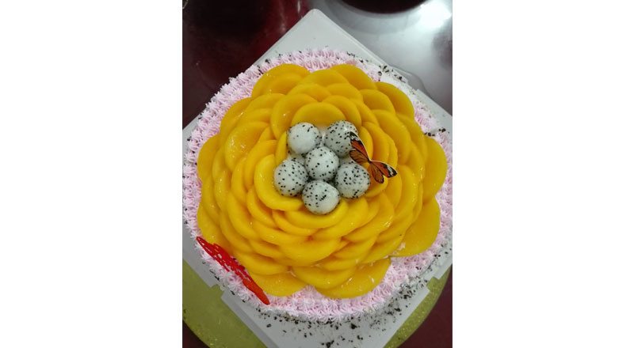“看中间是什么？”
“火龙果啊！”
“你说你喜欢火龙果，看，火龙果……”
鲜艳的黄桃花朵中间是六个可爱的火龙果球。我一下子想起来，今天骑车路过一个公园，公园门口用了几个火龙果当雕塑，又滑稽又可爱。我当时兴奋的喊了起来：
“呀，火龙果！”
“你喜欢火龙吗？”
“喜欢啊！”
“.…..”
很随意的几句话，没想到十七竟放在了心上。从小到大，还没有这么被当回事过，真是又惊又喜，激动的不敢相信这是真的。整个晚上在声声祝福阵阵笑声中度过，真心又纯粹的祝福放我感动的稀里哗啦，幸福的彻彻底底！
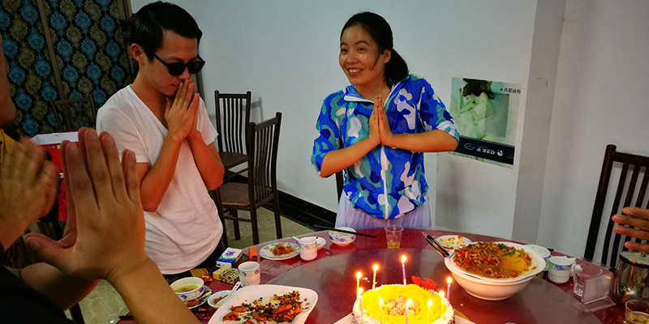这是我最幸福的生日，也是这么多年来最让我感动的生日。本打算环岛一周送自己一个特别的礼物，没想到一路上收获这么多。特殊的经历，纯粹的的朋友，真心的祝福，还有还有时时刻刻的关心。老大，莫名，阿杰，阿振，十七，和你们在一起的快乐时光，是我收到的最美好的礼物，我爱你们！
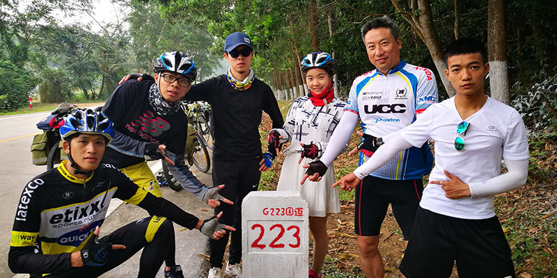
18
赞
18
查看
18
留言

最新留言
访客20170202
12:12
麻雀和乌鸦一起摆龙门阵。 麻雀说:你是啥子鸟哦? 乌鸦说:我是凤凰噻! 麻雀:哪有你龟儿子这么黑的凤凰哦?
访客20170202
12:12
麻雀和乌鸦一起摆龙门阵。 麻雀说:你是啥子鸟哦? 乌鸦说:我是凤凰噻! 麻雀:哪有你龟儿子这么黑的凤凰哦?